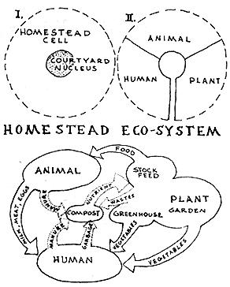
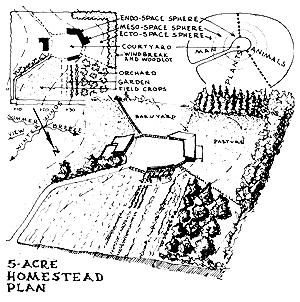
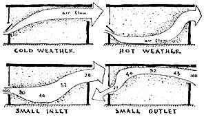
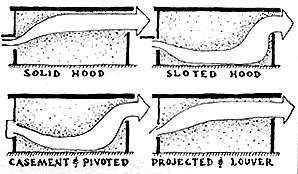
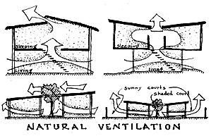
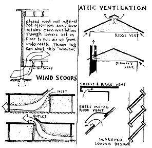
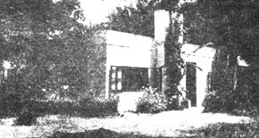
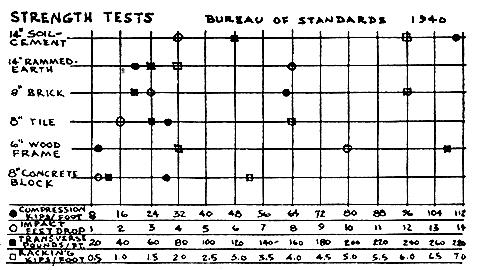
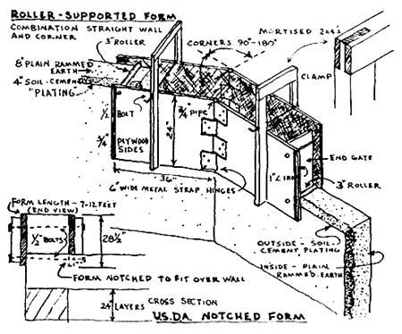
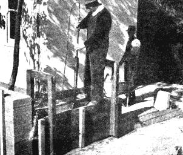

The total homestead layout-from structure design to soil and crop management practices-expresses more than any other single item, exactly where a homesteader is at in his viewing of lifestyle. A farm building lays open the thoughts and conceptions of its creator. The homestead layout and design that I am here proposing is therefore based on particular principles of life, deemed either self-evident or essential to my own thinking-through process. These principles make up the warp of this book-with individual homestead topics weaving consistently through the warp, like the welt that comprises the beauty and charm of finished tapestry.
My clients oftentimes express the view that they wish, as a basis of their plan, an "organic" homestead. To me this is like saying the basis of their existence on the land is on the same level as the design and construction of a compost heap. Familiarity with the organic gardening and farming movement is possibly responsible for their move to the land; but the organics concept is very elementary-certainly not significant enough for one to use as a base of his homestead-life. People too often grasp or view the organic gardening concept as a universal panacea-in lieu of the necessary study and discipline that must, precede a true understanding of land development and food production.
Let's start with these basics. The creation of a functioning homestead is a life-affirming endeavor. Plants, animals, and ourselves all live in association on the homestead. The homestead holds together (through the interdependence of its membership) a plant-animal-human organism. This dynamic outcome is formed by the interrelated organisms in response to the homestead habitat; living organisms and non-living environment. And the constant interraction of these organisms to the homestead environment can be called an ecosystem.
On the homestead, living in harmony with one's environment becomes a measure of maturity. Plants and animals also-and even soils grow, develop and mature. (A "climax" type vegetation-like a hardwood or redwood forest, or grass on the prairie-is an example of a mature plant growth). No "hunger signs" are evident; even scarce trace elements are recycled through the plant-from soil to roots, leaves, and back to the soil. All available nutrients are therefore utilized and conserved.
A young soil is made up primarily of parent rock material. It undergoes great change in adjustment to chemical and biological forces. A mature soil, on the other hand, reflects less of the "genetic" inheritance and more of the various environmental forces-like temperature, vegetation type, amount of rainfall, etc.
The homestead then becomes an organism where a maturing process is allowed to develop. The various homestead components adapt themselves through a process of natural selection. Adaptation involves the ability of each component to cope with its environment in the homestead. Plants, for instance, that are allowed to make full rise of soil nutrients, water, temperature and light factors, can give protection against such adverse factors as temperature extremes, drought, harmful insects and disease.
So in this chapter we will be thinking in terms of building an organic ecosystem rather than house-barn-shop-garden. The animal, plant, and human components will be situated in this homestead in harmonious and maturing juxtaposition. This harmonious maturation is the homestead's individuality. No other homestead-no other place-in the world is like it.
The success or failure of one's homesteading effort depends more on proper planning and layout arrangements than on any other single factor. Take a long view of your homestead property and imagine yourself creating a new life form on that plot of dirt. Start first with the courtyard, which is the hub, or center-point of a homestead complex. Like the nucleus in a cell structure, the courtyard is the central point of all activity. All traffic originates or terminates in the courtyard. The court should have a minimum diameter of 100 feet, as vehicles can turn around easily. Buildings located around the court should be directly accessible-without going through gates. Fields and pastures should be readily accessible from the court-in the shortest and most direct route possible.
We now design arteries to connect the nucleus-courtyard to its extracellular and inter-cellular environment. A driveway, properly less than 200 feet in length, connects the courtyard with public access. The longer this entrance road the more expensive. it is to build and maintain. Electric and telephone lines may cost more, too, with excessive length. Secondary artery-roads must be provided to connect the various plant-animal-human functions to the courtyard. A third access pattern must also be provided to connect the various animal-plant-human components to each other. A circular routing has been found most efficient from a chore performance point of view.
Traffic circulation patterns should be planned in detail. Buildings between which there is the most travel should be grouped together. The buildings, and adjacent yards, should be arranged so that they can be reached by truck. Ample size doors and gates-both in height and width-should be provided for easy access of equipment. Feed should be stored where it is used.
Flow diagrams should be made also to evaluate chore routes, storage areas, and work centers. Flow should be continuous, and not deadended. Keep distances between chore activities as short as possible. Make it feasible for livestock to self-feed. About 3/4 of the feed consumed by livestock becomes fertilizer. Livestock buildings and yards should be so planned to facilitate the movement of livestock through the homestead. This simplifies the fertilizer-handling chore as well as the feeding-grazing process.
Adequate concern should be given to this chore problem. A homestead can be thought of as a complex of food production. Raw materials are assembled, stored, processed and converted. The homestead is further complicated by interrelationships of buildings and equipment, climatic conditions and space-time factors as well as constant growth and change. An "engineered" homestead has an organization of work centers, with the work itself simplified and systemized.
Work-simplification studies indicate major advantages in handling larger amounts. Small batches should be eliminated. In handwork, it is always best to arrange jobs so that both hands can work.
Finally, due consideration must be given to safety and comfort. A healthful work environment must be provided for the homesteader as well as for animal housing. Inside, maximum winter protection should be provided for the homesteader as well as for animal housing. Inside, maximum winter protection should be provided with adequate provision for daylight and ventilation. Outside, one must protect against cold winters and drifting snow. Natural or planted windbreaks can be used to advantage in this regard. Downing, in 1860, pointed out the connection between animal environment and animal production:
As it is well known now that the extra supply of heat needful in the animal economy in cold weather, if not supplied by an extra consumption of food, with no increase of flesh or strength, but a great loss of comfort to the exposed animal, this extra consumption of food, in a few months, even where food is cheap, will more than balance all that can be saved by withholding a few feet of boards, and a few hours' labor. ARCHITECTURE OF COUNTRY HOUSE.
To this point in the discussion the homestead plan is based upon circulation-arteries and flow patterns for chore facilitation. But the actual heart of the homestead lies in open and enclosed spatial relationships of the animal-plant-human complex. I use the terms endo, meso and ecto to represent enclosed, partially open and open spaces. For instance, a greenhouse, barn, or house all express the enclosed, introverted endo-environment for plant, animal and man. An arbor, loafing shed, or covered patio satisfy partially enclosed meso-environment needs. A lawn, garden, field or pond area provide a completely open ecto-environment.
Integral to this inside-outside spatial relationship is the utility-nervous-system. The utility complex unifies the whole complex together. It is the maintenance center, shop and garage; it is the blood stream-the water system and sewage system. Utility includes also fences and walls and gates and culverts. It includes reservoirs, fuel storage and even a loading platform.
Again, as a living and maturing concept of the homestead, we find that a vertical development can take place from endo to meso to ecto spatial situations. A horizontal growth is possible within each sphere-endo, meso, and ecto. An "open-ended" homestead plan is important: It allows for expansion and growth both vertically and horizontally. Buildings and open yards should be adaptable to change and growth-functions should be flexible and multi-purpose.
Most homesteads have a multiplicity of shapes, roof pitches, window sizes, and materials. These aspects can be kept consistently related and considerable variation maintained in plan, shape, complication in layout or change in height. A consistent design policy is to be desired: it maintains a unifying effect on the group as a whole.
The diagramatic endo-meso-ecto homestead layout represented here is only theoretically possible. Site conditions influence homestead design and arrangement. Solar orientation is perhaps the most important factor--getting sun and shade where each is needed, summer and winter. Wind direction determines the size and location of windbreaks and arrangement of buildings. Land contour determines water and air drainage, and thus farming or gardening location. Summer breezes and view direction further complicate planning.
It would be impossible to discuss in detail all the problems related to homestead planning in this one all-too-brief chapter. Specific information will be offered in following chapters; inspiration and interest in planning is intended here. It is hoped that sufficient has been included to give the potential homesteader an all-over view. This chapter, furthermore, appears early in the book (which is being published chapter by chapter) before too much development of the homestead takes place. Inspiration is not enough; fulfillment also requires planning. As an old German adage has it: We get so soon old and so late smart.
THE OWNER-BUILT HOME, BOOK ONE, CHAPTER 5
VENTILATION
I have often wondered to what extent house design in the modern world is responsible for social and domestic misery, to say nothing of poor health. The great architect Frank Lloyd Wright once declared that he could design a house which would make its occupants get a divorce. Even such a house would, doubtless, be superior in design to the type of dwelling purchased or rented by Mr. and Mrs. Average American, and in which they unwittingly live "lives of quiet desperation."
Perhaps the greatest offense that house designers and builders commit against intelligent planning lies in the field of Climate Control. Most houses grossly violate even the basic principles of natural summer cooling and winter heating. Ordinary rule-of-thumb builders are not the only violators of fundamental Climate Control principles. Architects of our largest and most modern hospitals, schools, and even skyscrapers fail to calculate such matter-of-course features as solar angles, ventilation effects, daylighting and insulation requirements. The head research architect of Texas A. and M., William Caudill, an extremely capable designer, tells of "boners" he has made in private practice in the very field of building design in which he has specialized-namely, ventilation control.
A few years ago, for instance, he designed a magnificent, school building in Texas. He took into account all the usual ventilation requirements-orienting the classrooms perpendicular to prevailing breezes, allowing ample openings to let air into and out of each room, keeping the rooms out of range of wind-obstructing trees and buildings, etc. More than the usual amount of planning went into a provision for the cooling effects of summer breezes. But when the school building was occupied, teachers and students registered complaints against the excessively hot classrooms. Upon investigation, Caudill found that everything checked according to calculation. There was ample air flow through the classrooms. But the air was flowing along the ceilings instead of through the "living-zone."
Obviously, the window type was ill-chosen, a commonly used "Architecturally Projected" window that sends the air to the ceiling. No other air diversion is possible with this type of window. (Imaginative architects in another school building, however, installed this type of window upside down, and so achieved a successful downward air flow to the living-zone.)
Basic to ventilation control is the principle that with air it is the direction and speed of flow that determine the cooling effect. For air speeds of 200 feet per minute, the cooling effect is equivalent to that of lowering the dry bulb temperature by five degrees in still air.
Enough is now known about natural ventilation as a summer cooling phenomenon to allow the entire replacement of artificial air-conditioning devices. Differences in pressure and in temperature are responsible for air movement through a building. When air enters a room at the floor level and leaves through high windows, it is difference in air temperature that causes the movement. In many semi-tropical African homes, cool night-air is drawn through floor level louvers extending the length of the house. Once inside, the air is warmed, rises, and flows out through similar louvers near the ceiling. (When a ventilation system of this sort is employed, windows can be fixed and screens eliminated, with the result of more light and a better view. This "stack-effect" phenomenon operates in a hot, dry climate where the temperature inside the building at night is appreciably higher than that outside. In a climate where the temperature of the air inside the building is generally about the same as that outside-a warm, humid climate-the stack-effect is negligible.)
Pressure differences result from the exterior collision of moving air with the building. When wind hits a building it piles up and sweeps around the sides. A low-pressure area is thus created on the side and leeward walls of the building, in contrast to the high pressure area on the windward wall. In terms of natural ventilation, it is the low-pressure area that is strategic; it is the low-pressure wall which can be designed to suck air rapidly through the building. From a practical standpoint, the low-pressure (suction) wall should be designed with a much larger opening than the high pressure (windward) wall. This basic principle of natural ventilation is quite contrary to the common practice of providing the maximum opening on the windward side.
Wind tunnel tests at the University of Texas and at the South Africa Building Research Station have given us some very interesting ventilation facts. In one test, researchers were baffled when they saw that overhangs prevented a natural air movement. But when slots were provided in the overhang, the desired ventilation effects were increased. The slots apparently equalized the pressures from below and above.
Window types can also influence air flow, as will be illustrated in more detail in a following chapter on window design. Casement windows have the advantage that sashes can be swung clear of openings, and can be adjusted to serve as wind scoops should a breeze be blowing obliquely to the wall in which they are situated. Louver windows are good in that they provide greater effective ventilation areas per unit of opening. Other types, such as double-hung and projected, partially obstruct the available opening. Ideally, ventilation openings should be situated in opposite external walls of a room. Flow is also greatest when the wind direction is within 30 degrees of the normal to the opening. Beyond this angle the flow decreases rapidly. Screening substantially reduces air flow-especially at low velocities. For example, 16 mesh mosquito gauze has been found to reduce the air flow through an opening by about 60% when the wind speed is 1.5 miles per hour. Exhaustive research at the Australian Building Research Station and at the South Africa one proved conclusively that the high ceiling room in itself does not provide an increase in summer comfort. The traditional house in India has a ceiling 12 to 14 feet high, but ventilation experts assure us that a 7 to 8 foot ceiling provides equal summer comfort.
In the Eastern United States, summer comfort depends mostly on air movement. I think one of the most challenging and exciting prospects for low-cost summer cooling lies in the field of architectural schemes for ventilating interiors where no breeze can be counted on. A totally new concept of building design results from the application of basic aerodynamical phenomena. We know enough about the principles of air flow to create a new architectural vocabulary. Window-ventilation can become as obsolete as ornamental Cape Cod shutters. Air can be brought in from the roof or from the floor. Wind scoops can be designed to assist air flow from practically any angle.
In many tropical countries, native housing employs natural air ventilation intuitively, so to speak. In such examples, it is upward convection air-flow-air movement caused by differences in temperature-that creates the draft. A high-pressure area at the floor level occurs and provides a source of cool air that will flow through low vents. The sun-heated roof, on the other hand, creates a low-pressure area. Air naturally rises out of the centrally-located clearstory vents, drawing cool air from below. In order to function properly, all other openings except the cool-air intake and warmair escape should be closed during periods of calm.
A slightly more elaborate version of this natural air-ventilation has still greater efficiency. Consider the "butterfly" roof which is the best roof-form known for sending self-induced wind through a building. If the lower-level unit is partly sunken and amply shaded by the cantilevered upper section, incoming air will be cooler than in a unit without shade and convection-flow thereby increased. With the roof-ridge clearstory louvers open, a convection air current flows from the cool, shadowed lower-level through the house and out through the roof-louvers.
The traditional patio-court in arid regions can be adapted to supply substantial air movement through the house in periods of calm. As warm air rises through the roof opening, it creates a low-pressure suction. This hot air is replaced by ground level air, which has been cooled by trees and shady lawn. If a treeless, "sunny-court" is employed in conjunction with a shaded court, an even greater natural air flow can result. The shaded court forms a high-pressure zone with low-pressure air in the opposite, low-pressure sunny court, drawing air through the house. As the moving air passes through the house it ventilates inside rooms.
There is one place in every conventional house that should utilize natural air-flow ventilation. I refer to the attic. Possibly one conventional house in a thousand has a truly sufficient area of attic ventilation for summer cooling advantage. For one thing, impartial investigations show that, if attic temperatures are to be reduced sufficiently by using gravity air-flow, the ventilation area must be about six times that specified by current building-code requirements. Attic ventilation cannot be figured on a square-inch per building square-foot, as is the general practice. Rather, it is the difference in the heights from the low inlet-vents to the high outletvents which makes for proper ventilation flow. In the majority of attic vents, this height difference is either negligible or not provided for at all.
Of the half-dozen or so methods of ventilating attics, the usual practice of installing wood louvers at gable ends is the poorest. Unless properly constructed, wood louvers fail to control rain and snow infiltration. The continuous ridge vent, on the other hand, is the most efficient means for ventilating attic spaces, as it provides the greatest stack height and therefore requires the least ventilation area. Soffit and rake vents are becoming popular among advanced-thinking tract-house builders. Ventilation screens should be located near the outer edge of the overhang to prevent winddriven rain from penetrating through to inside walls. High stack effects for attic ventilation can be obtained also by incorporating a dummy flue (but a real vent) in the fireplace chimney. The rotating mechanical-type roof vents (often seen on the roofs of industrial buildings) can very well be used to advantage in housing design, once the "esthetic-limitation" hurdle is overcome.
"Esthetic limitations" occur at every phase of the building construction process. No major advance in summer cooling will ever be possible until such phenomena as "gravity air-flow," "air-scoop ventilation," "warm-air convection," etc., become more a part of our working vocabulary, and our esthetic appreciation becomes more functional.
BIBLIOGRAPHY (books listed in order of importance)
Natural Air Flow Around Buildings: Ben Evans; Research report 59, Texas A. & M.
Geometry of Classrooms as Related to Natural Ventilation: William Caudilk Research report 62, Texas A. & M.
Ventilation Research in South Africa: van Straaten; National Building Research Institute, Pretoria, S. A.
Some Observations on Natural Ventilation: N. H. Shaw; Commonwealth of Australia, Dept. of Labor and National Service; Melbourne, 1946.
Experimental Studies in Natural Ventilation: J. B. Dick; Journal Institute Heating Ventilating Engineers, vol. 17, page 420.
Wind Tunnel Tests on Scale Model Buildings as a Means for Studying Ventilation: J. J. Wannenburg; National Building Research Institute, Pretoria, S.A.
Effects of Landscape Development on the Natural Ventilation of Buildings: Robert White; Research report 45, Texas A. & M.
Natural Ventilation, Ceiling Height and Room Size: J. W. Drysdale; Commonwealth Experimental Building Station, Sidney.
The building illustrated below is, at first appearance, quite ordinary and unpretentious. In plan it has the typical five-rooms-and-bath arrangement. What gives this house distinction, however, is the fact that it was built as an experiment in the use of low-cost materials. Civil Engineering Professor John Kirkham constructed the building some twenty years ago, at Stillwater, Oklahoma. The work was done by unskilled labor, and the total cost of the house complete, including plumbing, lighting, and all finishing, was $887.80! This astonishingly low construction cost was made possible by using tamped earth in the walls, floor and roof. Thin layers (1-5/8 inches thick) of reinforced concrete were poured to support the flat earth roof and to cover the tamped earth floor.
Kirkham helped to stimulate my current interest in earth-wall construction which, with various techniques, is older than history itself and at various times has been carried out in almost every country in the world. The evidence of centuries has conclusively proven earth-wall buildings to be sufficiently strong and lasting. Besides the cool-in-summer and warm-in-winter thermal characteristics, earth-wall buildings are dry, fireproof, rotand-termite proof, and soundproof.
At this stage in the discussion of earth-wall buildings, my clients usually ask: "Well, if this method of construction is so good, why is it so little used in recent years?" I would say first of all that inasmuch as there is nothing in bare earth to sell, no commercial or private-interest group can be found to extol its merits. But government-sponsored housing projects, such as we had in this country during the depression, constructed hundreds of earth homes and public buildings, and during one recent year in India, 4,000 permanent earth homes for displaced persons were built.
Despite their value, earth buildings are, as we know, the exception and riot the rule. In our own "land of freedom" it is quite uncommon to find a building ordinance which will approve earth-wall construction! Who is there among us so naive as not to recognize the insidious nature of building-material manufacturers' influence on building code requirements? One effective lobby by the American Lumbermen's Association, and the com plete earth-wall program under the U.S. Department of Commerce was neatly shelved.
With unquestioning loyalty and unbelievable ignorance, building inspectors say "nix" to earth-wall construction in this country. Yet, according to structural tests at the School of Engineering, Christchurch, N.Z., a foot length of soil-cement wall, 8 inches thick, will carry over 21 tons at failure. The weight of each foot of wall, eight feet high, is approximately one-fourth ton. That leaves 20-3/4 tons for roof weight and safety! The Australian Commonwealth Experimental Building Station found that the compression strength of an adobe block is in excess of 25 tons to the square foot. And our own Farm Security Administration claims 33 tons per square foot. This is actually about ten times the strength needed for conventional roofing weight! A complete report on the structural, heattransfer, and water-permeability properties of various earth-wall constructions was issued in 1940 by the Bureau of Standards.
Anyone who sends to me (Oakhurst, Calif.) for a free copy of my extensive earth construction bibliography will probably wonder why it is that earth-wall construction is not better thought of or more commonly known, at least among common people who build their own homes. Out of the 150 references I have gathered, the few listed at the end of Chapter 2 sum up most of the essential information. Alas, too many existing earth-wall buildings were erected by inexperienced builders who lacked knowledge of basic construction as well as adequate tools and equipment. Rule-of-thumb procedure too often fails to give satisfactory results when the variables are great, as they certainly are when dealing with soil conditions. Furthermore, the really valuable information on this subject, especially research material from other countries, never seems to reach the hands of the amateur home builder.
So in this chapter on monolithic earth-wall construction, and the following chapter on earth-block construction, I will try to illustrate optimum earth-wall practices: (1) through a more careful selection of soil and better understanding of soil mechanics; (2) through reduction of time and labor by the use of improved equipment; (3) through knowledge of soilstabilization principles; (4) through advance in protective surface finishes; and (5) through improvements in structural details and building design. The material that I present is a result of many years' experimentation and study, but none of it is beyond the capabilities of the inexperienced, low income home builder.
The first step in building an earth-wall structure is to investigate the kinds of soil which are available at or convenient to the building site. Pick up a handful of dry earth and rub it between the fingers; sand particles are gritty to the touch, while silt and fine particles adhere closely to the skin and have a silky feel. These physical properties, which can be felt and seen are largely responsible for the strength and durability of walls, or for their susceptibility to cracking due to moisture movement. Warping and cracking are characteristics of unstable colloidal clays, which readily take up moisture. Sand is known to reduce this shrinkage, but excessive amounts prevent proper bonding. Clay bonds the coarser granular minerals together, but it has the unfortunate characteristic of being a thirsty material. As it absorbs water it swells, as it releases moisture it cracks. Then too, a soil high in silt content produces a wall which erodes readily.
A wide variety of soils can be used in earth-wall construction. Satisfactory earth can be found almost anywhere, preferably in the subsoil region three feet or less below the top soil. Some simple tests for determining sand-clay proportions appear in the following chapter. Suitable soil for rammed earth construction should not contain more than 50% clay, including loam and silt, and not less than 50% sand including gavel or other granular materials. Experience indicates that the best proportions are: clay, 30-35%; sand, 65-70%.
Moisture content in the mix should be very carefully regulated. Wall durability and resistance to cracking depends upon percentage of water content, among other factors. The amount of shrinkage varies with amount of moisture, provided enough moisture is present to bond the soil particles. A simple test for determining moisture content should be used. First sift a sample of earth into a pan and oven-dry it. Place 8 pounds of the dried earth in a flowerpot or similar container having a hole in the bottom. Place the pot in a pan containing one pound of water. Through capillary attraction the earth will absorb all of the water. The uniformly moistened soil will contain about 12% moisture by weight. This is the maximum percentage of moisture allowed. Light sandy soil of low colloidal content should contain from 7 to 10% water.
For less than $100 the outside walls of an earth home can be stabilized by adding common cement to the mixture. As a result of adding 15% cement admixture to a very fine sand loam soil (74% sand), strength increased from 302 to 1,150 pounds per square inch. A stabilized wall is also affected less by moisture absorption or penetration, as well as being more resistant to other weathering agents. Cement is most economical in soils containing 50% or more of sand. With this proportion about 15% cement should be used, whereas with the more ideal proportion of 70% sand only 8% cement is needed to achieve the same results. With a 60% sand mix about 12% cement should be added.
In addition to having structural superiority, a soil-cement wall will shrink less than one-half the amount of a plain rammed earth wall (4/10 inch in 12 feet as against 1 inch.) The cost of the additional cement admixture can be reduced two-thirds by "plating" the outside weather-exposed surface with soil-cement, and retaining regular rammed earth soil inside. It is a simple enough operation: a shovel-full of the soil-cement is thrust against the outside of the form and three or four shovels-full of the earth mix without the cement are placed against the inside. This four or five inch thick layer of earth is then tamped together.
Traditional varieties of wall forms have been cumbersome and heavy, requiring much adjustment, bracing, and alignment. Just having to use these forms is more than enough to discourage anyone from building a monolithic earth-wall. But in recent years a number of form design improvements have been made throughout the world. At the Texas Agricultural and Mechanical College, lighter weight plywood was substituted for the heavy planking usually employed. The Commonwealth Experimental Building Station in Australia developed a "roller-supported" form with detachable wooden clamps. They found that the old-type demountable form required three men 1-1/2 hours to dismantle, reset and plumb, whereas their roller-supported form averaged 8 minutes and required only one man for the entire operation.
Contractors Dan and John Magdiel have built far more than their share of rammed earth homes in the southwest. They developed a form for their own use, then patented it, and now manufacture it for sale. The Magdiel wall form is all metal and firmly braced. After the form section of earth is tamped, one merely pulls up on a release lever to loosen the sides of the form. It is then moved ahead, clamped into place, and tamping resumed. Traditional wall-form systems require a corner section as well as a straight-run section. Magdiel eliminates the bother and expense of a corner form by simply tamping one straight section at right angles to another (the Magdiel form system will be illustrated in a following chapter.) A USDA bulletin on rammed earth construction suggests notching the end of the form so that it will pass unobstructed over the adjoining wall. The corner is then made by right-angled alternating courses.
This book is being written in a rammed earth studio that I built four years ago. During the planning stages I made a study of numerous types of wall forms; then improvised on some of the more salient features. I ended up with a type of roller-supported plywood form that can be adjusted to fit any corner angle. This form can be braced with detachable wooden "C-clamps" instead of bolts. The legs of the clamps retain the form walls by the canti-lever principle. The form walls are thus externally, braced and there are no bolts to remove and replace before tamping the next section. The form is light in weight and can be easily handled by one man. It is also quite inexpensive and simple to construct.
Experimenters at South Dakota State College discovered that the compression strength of a rammed earth wall can vary from 93 to 393 pounds per square inch, depending upon the intensity of the ramming stroke. In order to achieve maximum strength the rammer should be raised about 12 inches and all the force possible applied with each stroke. The flat-headed hand rammer should weigh between 14 and 18 pounds. Preferably it should be between 4 and 6 inches square. A one-inch iron pipe about 6 feet long makes a good shaft.
It takes about one hour to hand tamp 4 cubic feet of wall. By using a mechanical rammer this time can be reduced to one-half or even less. The type of mechanical rammer used for tamping back-fill into trenches, and sand into molds for heavy foundry work, is ideal for ramming soil in wall forms. Actually, any type of long-stroke machine of moderate speed, which delivers powerful blows very similar to those of manual ramming, is satisfactory.
About 30 tons, or 80 cubic yards, of earth go into the walls of an average-sized earth home. Dug earth has about twice the volume of rammed earth, so it actually takes about 160 cubic yards of loose earth for the walls. For economy therefore, the main source of supply should be immediately adjacent to the project. Hauling costs for this amount of material would be prohibitive. These figures also suggest the importance of mechanical mixing in an earth building operation. A paddle mixer is about the only type of mechanical mixer that can be used for a semi-dry earth-cement combination. Any type of plaster mixer will work well, and one can usually be leased from equipment rental yards for the duration of a project. Using a mechanical tamper and mixer and a well designed form, a crew of three men should be able to place 4 cubic yards of rammed wall per day. So it takes about 60 man-days to build the walls of an averagesized rammed earth house.
Rammed earth walls are very often left untreated-some surviving hundreds of years of exposure. Ralph Patty (Age Strength Relationship for Rammed Earth, Engineering News Record, Vol. 117, No. 2, p. 44, 1936) found that earth walls increase in strength and erosion resistance with age. Tests of three widely varying soils indicated an average strength increase of 34% at one year, and 45% at two years, over the strength at 6 months. A complete evaluation of the many earth wall finishes appears in the following chapter.
Every structural material has peculiar properties which influence a building's eventual structural design. Earth is no exception. In fact, the nature of earth is such as to require a keen awareness of structural engineering problems, architectural planning and design layout. Earth, for instance, has a low structural strength in lateral loading, which must be structurally compensated for by dense and thick walls. (The Lima Cathedral in Peru is said to be the world's largest adobe building. No reinforcement was used in the walls, which are between 4 and 5 feet thick at the base, with diminishing thicknesses at the higher levels.) It is a good practice to maintain exterior load-bearing earth-wall thicknesses at one-tenth of the height.
It is obviously desirable to limit earth construction of walls to exterior walls. Partition walls, containing plumbing and electrical utilities as well as storage facilities, should have frame construction, and wall sections above window sills or between the windows themselves might advantageously be filled in with wood framing materials. This exception is reasonable, since the insulation value of an earth-wall decreases and the building cost increases as the wall rises.
An earth-wall building of low, compact, and regular plan will withstand seismic loads of moderate intensity. In areas where earthquake resistance is a deciding factor, foundations should be monolithic and steelrod-reinforced. A substantial continuous reinforced concrete bond beam should also be placed on top of the wall. Ceilings and roofs (preferably built of lightweight materials) should be anchored to both the ends and the side walls, and constructed to serve as diaphragms to resist lateral distortion.
BIBLIOGRAPHY (books listed in order of importance)
Earth For Homes: Housing and Home Finance Agency, March, 1955
Earth Wall Construction: Middleton, Sydney, Australia, 1952
Building in Cob, Pise and Stabilized Earth: Williams-Ellis, London, 1947
Rammed Earth: Housing and Town and Country Planning, Bulletin No. 4, U. N.
The Rammed Earth House: Merrill, Harped, 1947
|
 |
 |
 |
|
 |
 |
 |
|
 |
 |
 |
|
 |
|
|